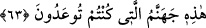
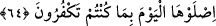

Akıl suret hâlinde yüzünü gösterse
Gündüz, onun ışığı önünde kararır
Ahmaklığın timsali ortaya çıksa,
Gece karanlığı onun önünde aydın olur
Azar azar gündüz ışığına alış,
Yoksa ışıksız bir yarasa olarak kalırsın
Akl-ı küllî için “Gözü kaymadı” (en-Necm 53/17) buyurdu.
Cüz’î akıl ise her yana bakar
Sonra şunu da bilesin ki ahmak câhil ve mutlak mânâda sapık kişi şeytanın elindedir.
Şeytan onu istediği yere çeker götürür. Bu kişi şayet işin hakîkatini bilse ve yüce sultan
olan Allah’ı akletse/anlasa, tevhid ve tâat yolunu bulsa elbette Allah Teâlâ onu derhal
korumasına alır. Çünkü tevhid Allah Teâlâ’nın muhkem kalesidir. Kim bu kaleye girerse
apaçık düşman olan İblis’in hile ve tuzağından emin olur. Kim kurtuluş aramak üzere bu
kaleden çıkarsa, helâk onu yakalar, âfet ve musibetlerin elinde ölür gider. Kim kendisini
ihmal eder de harekete geçmezse güneşi gölgeden ayıramayan bir deli gibi olur.
Allah Teâlâ’dan bizi kendi tâati ile meşgul etmesini, vakitleri O’na ibâdetle
doldurmayı, hizmet nurlarıyla şeytanı kovmayı ve türlü himmetlerle nefsi kahretmeyi
niyaz ederiz.
63. İşte, bu size vaadedilen cehennemdir.
“İşte, bu” ey mücrimler, şeytana ibâdet etmenize mukabil asırlar boyu dünyada
peygamberlerin diliyle “size vaadedilen cehennemdir.” Allah Teâlâ’nın: “Mutlaka sen
ve sana uyanların hepsiyle cehennemi dolduracağım!” (Sâd, 38/85) kavli ve
diğerleri bu vaade örnektir.
Bu yeni bir cümledir. Cehennemin kenarından aşağı yuvarlanmaya yüz tuttuklarında
ayıplama, azarlama, ilzam ve susturmadan sonra onlara cehennem bekçileri tarafından
bu sözle hitap edilir.
64. İnkârınız sebebiyle bugün oraya girin!
Bu emir Allah Teâlâ’nın “Tat bakalım. Hani sen kendince üstündün, şerefliydin!”